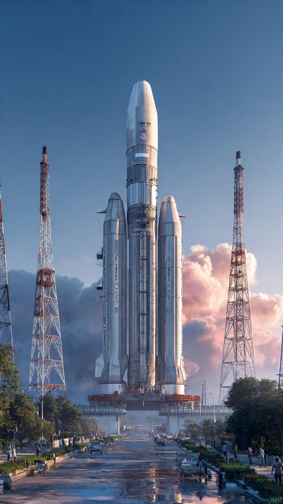
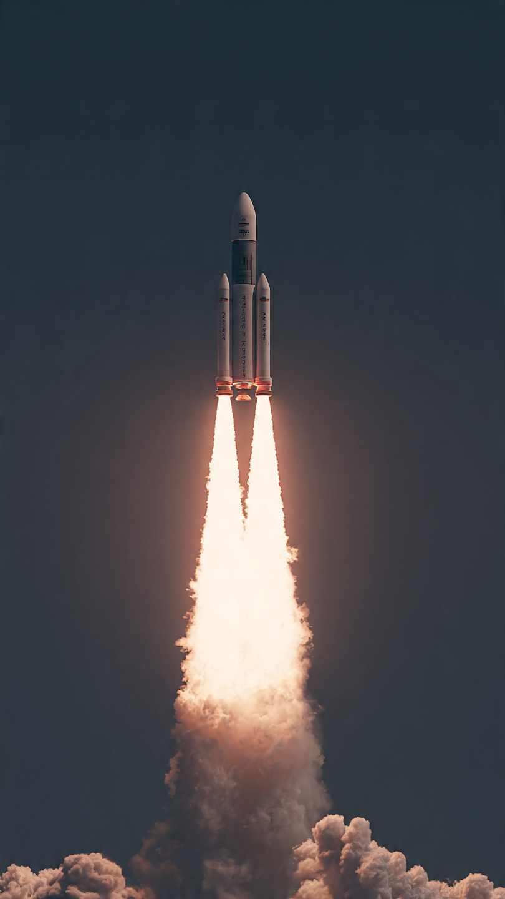

India Moves One Step Closer to Human Spaceflight

India’s ambitious human spaceflight program, Gaganyaan, has reached an important milestone with the successful completion of a critical air-drop test. Conducted by the Indian Space Research Organisation (ISRO), this test demonstrates the reliability of key safety systems that will protect astronauts during future missions.
The air-drop test is a vital part of the mission’s development phase. It evaluates the crew escape system, which is designed to safely bring astronauts back to Earth in case of an emergency. With this successful trial, ISRO has shown significant progress toward making India one of the few nations capable of sending humans into space independently.
Gaganyaan is India’s first human spaceflight mission, aiming to send a crew of Indian astronauts into low Earth orbit. The mission represents a major leap in India’s space capabilities and technological strength. It is not just a scientific project, but also a symbol of national pride and innovation.
The mission involves launching a crew module aboard a specially designed rocket, ensuring astronaut safety through advanced systems, and bringing them back safely after orbiting Earth. ISRO has been working on this mission for several years, focusing on safety, precision, and reliability.

The recent air-drop test plays a crucial role in validating the crew escape system. During the test, a mock crew module was dropped from a high altitude to simulate emergency conditions. The system successfully deployed parachutes and ensured a controlled landing, proving its effectiveness.
This test is essential because astronaut safety is the top priority in any human space mission. By successfully completing this phase, ISRO has demonstrated that its emergency systems are capable of handling unexpected situations during launch or flight.
The Gaganyaan mission showcases India’s growing expertise in space technology. From advanced life-support systems to precision navigation and recovery techniques, every component is being carefully designed and tested.
The air-drop test highlights ISRO’s ability to integrate complex engineering systems and execute them flawlessly. It also reflects the organization’s commitment to meeting international standards in human spaceflight.
Once completed, Gaganyaan will place India among an elite group of nations that have successfully conducted human space missions. This achievement will enhance India’s position in the global space community and open doors for international collaborations.
The mission is also expected to inspire future generations of scientists, engineers, and innovators. It demonstrates that with determination and investment in research, India can achieve remarkable milestones in science and technology.
Following the success of the air-drop test, ISRO will continue with a series of additional tests and simulations. These include uncrewed missions, system validations, and final safety checks before sending astronauts into space.
Each step is carefully planned to minimize risks and ensure mission success. The ultimate goal is to conduct a safe and successful human spaceflight mission that will mark a historic moment for India.
The successful air-drop test is a major achievement for ISRO and a significant step forward for the Gaganyaan mission. It reflects India’s growing capabilities in space exploration and its commitment to advancing scientific progress.
As the mission moves closer to reality, it continues to capture the imagination of millions across the country. Gaganyaan is more than just a space mission—it is a testament to India’s ambition, innovation, and determination to reach new heights.